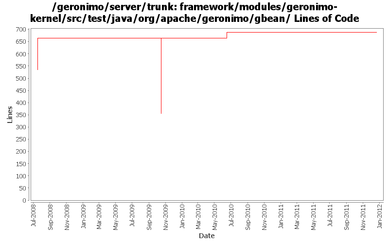

[root]/framework/modules/geronimo-kernel/src/test/java/org/apache/geronimo/gbean
 annotation
(1 files, 236 lines)
annotation
(1 files, 236 lines)
 runtime
(2 files, 453 lines)
runtime
(2 files, 453 lines)

| Author | Changes | Lines of Code | Lines per Change |
|---|---|---|---|
| Totals | 12 (100.0%) | 469 (100.0%) | 39.0 |
| djencks | 9 (75.0%) | 339 (72.3%) | 37.6 |
| gawor | 1 (8.3%) | 130 (27.7%) | 130.0 |
| gdamour | 2 (16.7%) | 0 (0.0%) | 0.0 |
GERONIMO-6240 Make several base geronimo functions (kernel, deployer, etc) DS services and make the car-maven-plugin take advantage of that. Server assembly doesn't work yet, builds framework.
0 lines of code changed in 2 files:
GERONIMO-5380 Allow exposing gbeans as osgi services (or service factories). Replace the specialized code in connector with this new generic code. This is not serialziation compatible with old GBeanInfo and GBeanData
29 lines of code changed in 3 files:
GERONIMO-4916 step 2 move sandbox osgi framework into trunk
310 lines of code changed in 2 files:
GERONIMO-4916 step 1 remove old framwork
0 lines of code changed in 2 files:
GBeanInfo.getGBeanInfo should call the MultiGBeanInfoFactory so that the annotation GBean configuration style is attempted.
(GERONIMO-4399) GBean Annotations are not supported for GBeans declared in XML configuration
0 lines of code changed in 2 files:
Improve connector deployment and dynamic gbean handling (GERONIMO-4131)
130 lines of code changed in 1 file: